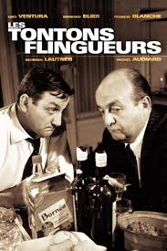
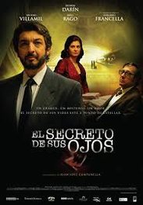

After various experiences in banking and corporate finance, I am now looking to improve my technical skills and work on new projects. I am also currently following an International Relations Msc with a special at King's College London
|  |
Les Tontons FlingueursUn classique de la comédie française "Touche pas au Grisbi!" |
Lawrence d'ArabieL'un des plus grand chefs d'oeuvre du cinémas |
|
|  |
El secreto de sus ojosCe que le cinéma argentin peut faire de mieux, un drame émouvant! |